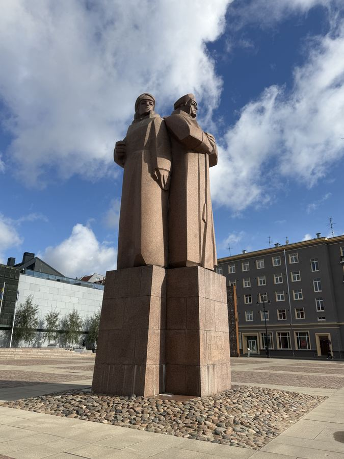
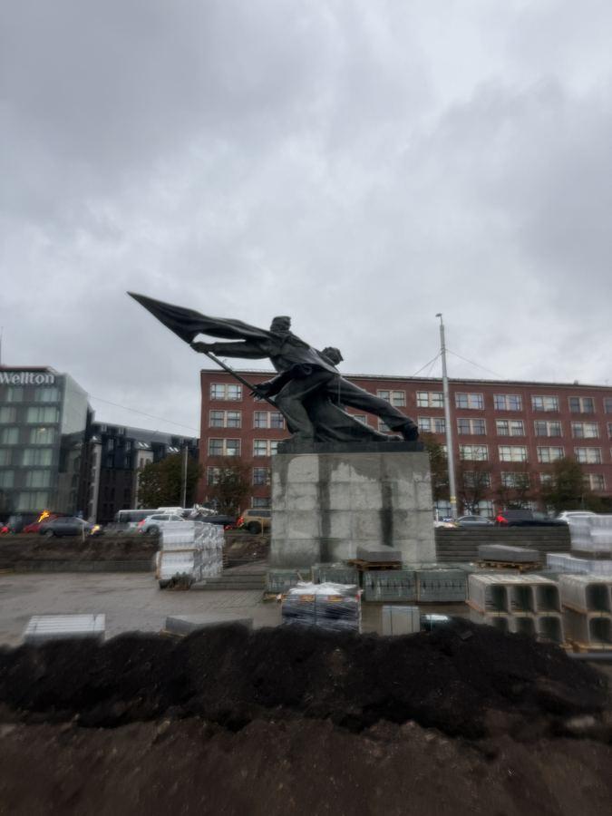
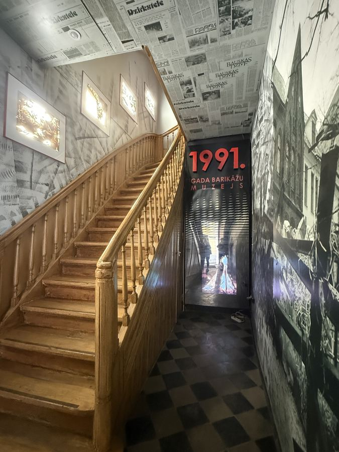
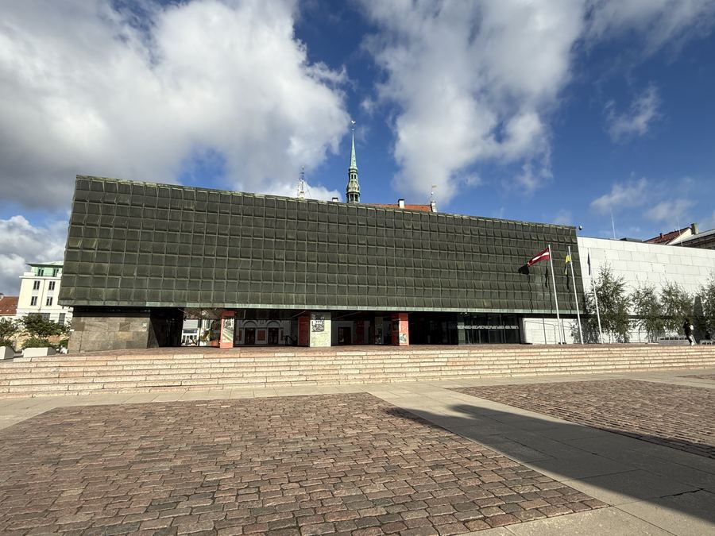
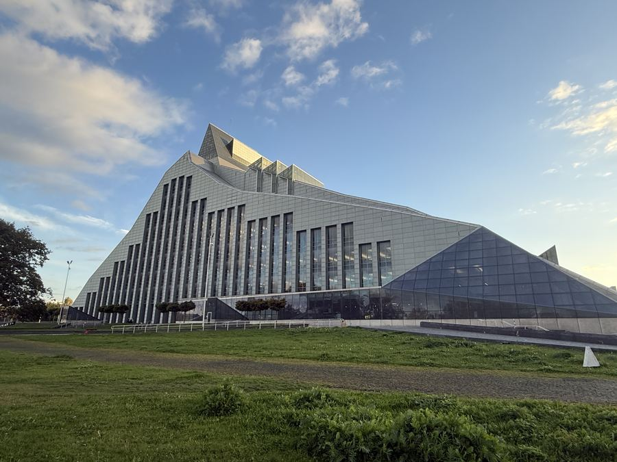
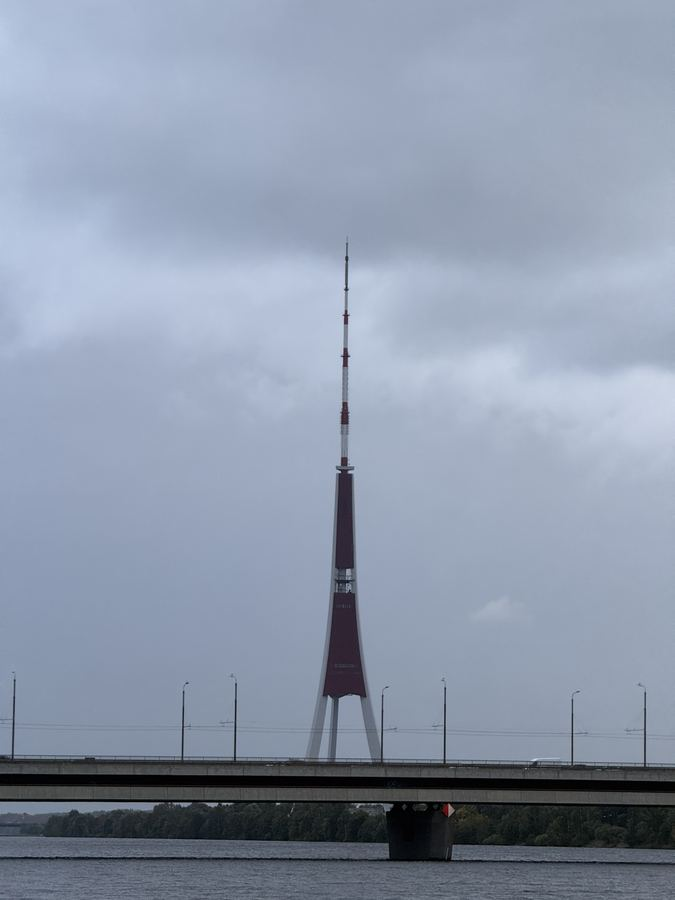
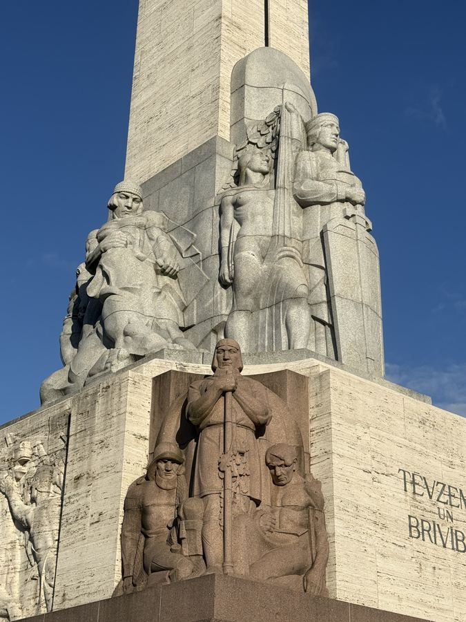
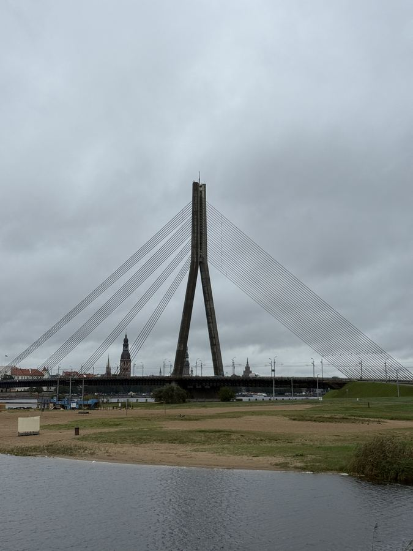

01 / 9
Latvian Academy of Sciences

02 / 9
Latvian Riflemen Monument

03 / 9
Monument to the Fighters of 1905

04 / 9
Museum of the 1991 Barricades

05 / 9
Museum of the Occupation of Latvia

06 / 9
National Library of Latvia

07 / 9
Riga Radio and TV Tower

08 / 9
The Freedom Monument

09 / 9